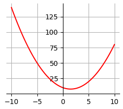
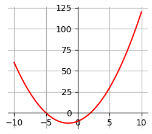
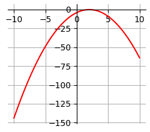

1 Основы
1 Основы
1 Основы
В то далёкое время, когда Паша ходил в школу, ему очень не нравилась формула Герона для вычисления площади треугольника, так как казалась слишком сложной. В один прекрасный момент Павел решил избавить всех школьников от страданий и написать и распространить по школам программу, вычисляющую площадь треугольника по трём сторонам.
Одна проблема: так как эта формула не нравилась Павлу, он её не запомнил. Помогите ему завершить доброе дело и напишите программу, вычисляющую площадь треугольника по переданным длинам трёх его сторон по формуле Герона. На вход программе подаются целые числа, выводом программы должно являться вещественное число, соответствующее площади треугольника.
#import math
a = int(input())
b = int(input())
c = int(input())
p = ((a + b + c) / 2)
s = (p * (p-a) * (p-b) * (p-c)) ** (1/2)
#result = math.sqrt(s)
print(s)Напишите программу, принимающую на вход целое число, которая выводит True, если переданное значение попадает в интервал (−15,12]∪(14,17)∪[19,+∞) и False в противном случае (регистр символов имеет значение).
Обратите внимание на разные скобки, используемые для обозначения интервалов. В задании используются полуоткрытые и открытые интервалы.
a = int(input())
print(a > -15 and a <= 12 or a > 14 and a < 17 or a >= 19)Напишите простой калькулятор, который считывает с пользовательского ввода три строки: первое число, второе число и операцию, после чего применяет операцию к введённым числам ("первое число" "операция" "второе число") и выводит результат на экран.
Поддерживаемые операции: +, -, /, *, mod, pow, div, где mod — это взятие остатка от деления, pow — возведение в степень, div — целочисленное деление.
Если выполняется деление и второе число равно 0, необходимо выводить строку "Деление на 0!".
Обратите внимание, что на вход программе приходят вещественные числа.
a = float(input())
b = float(input())
c = input()
if b == 0 and (c in ['div', 'mod', '/']):
print('Деление на 0!')
elif c == '+':
print(a + b)
elif c == '-':
print(a - b)
elif c == '*':
print(a * b)
elif c == '/':
print(a / b)
elif c == 'mod':
print (a % b)
elif c == 'div':
print(a // b)
elif c == 'pow':
print (a ** b )n = int(input())
for i in range(1, n + 1):
for j in range(1, 10):
print(f"{i} + {j} = {j + i}")
print()Жители страны Малевии часто экспериментируют с планировкой комнат. Комнаты бывают треугольные, прямоугольные и круглые. Чтобы быстро вычислять жилплощадь, требуется написать программу, на вход которой подаётся тип фигуры комнаты и соответствующие параметры, которая бы выводила площадь получившейся комнаты.
Для числа π в стране Малевии используют значение 3.14.
Формат ввода, который используют Малевийцы:
треугольник
a
b
cгде a, b и c — длины сторон треугольника
прямоугольник
a
bгде a и b — длины сторон прямоугольника
круг
rгде r — радиус окружности
room = input()
if room == 'треугольник':
a, b, c = int(input()), int(input()), int(input())
p = (a + b + c) / 2
print((p * (p - a) * (p - b) * (p -c )) ** 0.5)
if room == 'прямоугольник':
a, b = int(input()), int(input())
print(a * b)
if room == 'круг':
r = int(input())
print(3.14 * (r ** 2))Пример выполнения программы. Создадим файл ввода room_1.txt:
треугольник
4
6
3
Запустим программу, передав ей на вход созданный файл, используя символ перенаправления ввода <:
>set PYTHONUTF8=1
>python fils.py < room_1.txt
5.332682251925386Note
Более подробно о переменной окружения PYTHONUTF8 см.
здесь.
Напишите программу, которая получает на вход три целых числа, по одному числу в строке, и выводит на консоль в три строки сначала максимальное, потом минимальное, после чего оставшееся число.
На ввод могут подаваться и повторяющиеся числа.
a = int(input())
b = int(input())
c = int(input())
if a > b:
maks = a
else:
maks = b
if c > maks :
maks = c
print(maks)
if a < b:
min = a
else:
min = b
if c < min:
min = c
print(min)
print(a + b + c - min - maks)Даны два целых числа m и n. Напишите программу, которая выводит все числа от m до n включительно в порядке возрастания, если m < n, или в порядке убывания в противном случае.
На вход программе подаются два целых числа m и n, каждое на отдельной строке.
m, n = int(input()), int(input())
if m < n:
for i in range(m, n + 1):
print(i)
elif m > n:
for i in range(m, n - 1, - 1):
print(i)
elif m == n:
print(m)В институте биоинформатики по офису передвигается робот. Недавно студенты из группы программистов написали для него программу, по которой робот, когда заходит в комнату, считает количество программистов в ней и произносит его вслух: "n программистов".
Для того, чтобы это звучало правильно, для каждого n нужно использовать верное окончание слова.
Напишите программу, считывающую с пользовательского ввода целое число n (неотрицательное), выводящее это число в консоль вместе с правильным образом изменённым словом "программист", для того, чтобы робот мог нормально общаться с людьми, например: 1 программист, 2 программиста, 5 программистов.
В комнате может быть очень много программистов. Проверьте, что ваша программа правильно обработает все случаи, как минимум до 1000 человек.
Дополнительный комментарий к условию: Обратите внимание, что задача не так проста, как кажется на первый взгляд. Если ваше решение не проходит какой-то тест, это значит, что вы не рассмотрели какой-то из случаев входных данных (число программистов 0 <= n <= 10000). Обязательно проверяйте свои решения на дополнительных значениях, а не только на тех, что приведены в условии задания.
n = int(input())
# отбрасываем тысячи и сотни, они не влияют на окончания.
w = n % 100
# узнаем колличество десятков и единиц
d = w // 10
u = w % 10
# если кол-во десятков 1 , то - ов, и все.
if d == 1:
print(str(n)+ ' программистов')
# иначе, 1 единица, то нулевое.
elif u == 1:
print(str(n)+ ' программист')
# если единиц от 2 до 4 включительно, то - а
elif 2 <= u and u <= 4:
print(str(n)+ ' программиста')
# в остальных случаях - ов
else:
print(str(n)+ ' программистов')Напишите функцию print_digit_sum(), которая принимает одно целое число num и выводит на печать
сумму его цифр.
# объявление функции
def print_digit_sum(num):
print(sum(int(i) for i in str(num)))
# считываем данные
n = int(input())
# вызываем функцию
print_digit_sum(n)Паша очень любит кататься на общественном транспорте, а получая билет, сразу проверяет, счастливый ли ему попался. Билет считается счастливым, если сумма первых трех цифр совпадает с суммой последних трех цифр номера билета.
Однако Паша очень плохо считает в уме, поэтому попросил вас написать программу, которая проверит равенство сумм и выведет "Счастливый", если суммы совпадают, и "Обычный", если суммы различны.
На вход программе подаётся строка из шести цифр.
a = int(input())
n1 = a % 10
n2 = a % 100 //10
n3 = a % 1000 // 100
n4 = a % 10000 // 1000
n5 = a % 100000 // 10000
n6 = a // 100000
First = n1 + n2 + n3
last = n4 + n5 + n6
if First == last:
print('Счастливый')
else:
print('Обычный')Красный, синий и желтый называются основными цветами, потому что их нельзя получить путем смешения других цветов. При смешивании двух основных цветов получается вторичный цвет:
Напишите программу, которая считывает названия двух основных цветов для смешивания. Если пользователь вводит что-нибудь помимо названий «красный», «синий» или «желтый», то программа должна вывести сообщение об ошибке. В противном случае программа должна вывести название вторичного цвета, который получится в результате.
На вход программе подаются две строки, каждая на отдельной строке.
Программа должна вывести полученный цвет смешения либо сообщение «ошибка цвета», если введён был не цвет.
Примечание 1. Если смешать красный и красный, то получится красный и т.д.
Примечание 2. Поиграйтесь с настоящим цветовым микшером.
base_colors = {'синий', 'желтый', 'красный'} # множество допустимых цветов
combinations = {'красный': 'зеленый',
'синий': 'оранжевый',
'желтый': 'фиолетовый'
} # множество не может быть ключом
colors = {input(), input()}
if colors - base_colors: # Разность должна быть пустой
print('ошибка цвета')
elif len(colors) == 1: # Когда цвета одинаковые
print(min(colors))
else:
print(combinations[min(base_colors - colors)]) # Останется точно ровно один цвет,
# он и будет ключомНа числовой прямой даны два отрезка:[a1, b1] и [a2, b2].Напишите программу, которая находит их пересечение.
Пересечением двух отрезков может быть:
На вход программе подаются 4 целых числа: a1, b1, a2, b2 каждое на отдельной строке. Гарантируется, что a1 < b1, a2 < b2.
Программа должна вывести на экран границы отрезка, являющегося пересечением, либо общую точку, либо текст «пустое множество».
a1 = int(input())
b1 = int(input())
a2 = int(input())
b2 = int(input())
a = max(a1, a2) # нахождение максимального числа
b = min(b1, b2) # нахождение минимального числа
if a > b:
print('пустое множество')
elif a < b:
print(a, b)
elif a == b:
print(a)Оформим решение в виде функции и проведем тестирование (файл с программой).
import unittest
def segment_intersection(a1, b1, a2, b2):
a = max(a1, a2)
b = min(b1, b2)
if a > b:
return None
elif a < b:
return a, b
else:
return a
class TestSegmentIntersection(unittest.TestCase):
def test_do_not_intersect(self):
self.assertIsNone(segment_intersection(1, 3, 5, 6))
self.assertIsNone(segment_intersection(-12, -8, -7, -1))
def test_segments_touch(self):
self.assertEqual(3, segment_intersection(1, 3, 3, 6))
self.assertEqual(3, segment_intersection(3, 6, 1, 3))
self.assertEqual(-8, segment_intersection(-12, -8, -8, -1))
self.assertEqual(-8, segment_intersection(-8, -3, -12, -8))
def test_segments_intersect(self):
self.assertEqual((3, 5), segment_intersection(1, 5, 3, 6))
self.assertEqual((3, 5), segment_intersection(3, 6, 1, 5))
self.assertEqual((-9, -8), segment_intersection(-12, -8, -9, -1))
self.assertEqual((-9, -8), segment_intersection(-9, -1, -12, -8))
if __name__ == "__main__":
unittest.main() >python segment_intersection.py
...
----------------------------------------------------------------------
Ran 3 tests in 0.001s
OKДаны три вещественных числа a, b, c. Напишите программу, которая находит вещественные корни квадратного уравнения ax2 + bx + c = 0.
На вход программе подается три вещественных числа a != 0, b, c каждое на отдельной строке.
Программа должна вывести вещественные корни уравнения если они существуют или текст «Нет корней» в противном случае.
Примечание. Если уравнение имеет два корня, то следует вывести их в порядке возрастания.
Сначала немного математики.
Квадратичная функция вида y = ax2 + bx + c имеет форму параболы. В зависимости от коэффициентов a, b, c может иметь различное расположение относительно начала координат:
|  |  |  |
| y = x2 - 3x + 10 | y = x2 + 3x - 10 | y = -x2 + 4x - 4 |
Note
Для построения графиков использовалась библиотека matplotlib, см. файл
matplot.py.
Как видно из графиков, корнями уравнения вида ax2 + bx + c = 0 являются точки пересечения параболы с осью X. В первом случае корней нет, потому что парабола не пересекает ось X. Во втором случае парабола пересекает ось X в двух точках, следовательно уравнение имеет два корня. В третьем случае парабола касается оси X в одной точке, следовательно корень один.
Теперь само решение:
a = float(input())
b = float(input())
c = float(input())
discriminant = b ** 2 - 4 * a * c
if discriminant < 0:
print('Нет корней')
elif discriminant == 0:
x = -b / (2 * a)
print(x)
else:
xs = sorted([(-b - discriminant ** 0.5) / (2 * a), (-b + discriminant ** 0.5) / (2 * a)])
print(*xs, sep='\n')Вводятся три числа: сумма вклада, процентная ставка за период, количество периодов. Вывести текущие накопленные с капитализацией суммы по периодам.
m = int(input())
p = 1 + int(input()) / 100
n = int(input())
for i in range(1, n + 1):
print(i, m)
m *= pДопустим, кладем на счет 100000 денег с годовой ставкой 6%, с начислением по месяцам. Тогда месячная ставка будет 0.5%. Посчитаем накопления за год. Исходные данные:
100000
0.5
12Результат:
1 100000
2 100499.99999999999
3 101002.49999999997
4 101507.51249999995
5 102015.05006249994
6 102525.12531281242
7 103037.75093937648
8 103552.93969407334
9 104070.7043925437
10 104591.05791450641
11 105114.01320407893
12 105639.58327009932На вход программе подается натуральное число n. Напишите программу вычисления знакочередующей суммы 1 - 2 + 3 - 4 + 5 - 6 + ... + (-1)** (n + 1)n.
На вход программе подается натуральное число n. Программа должна вывести единственное число в соответствии с условием задачи.
n = int(input())
if (n % 2 == 0):
print(-n // 2)
else:
print(n // 2 + 1)n = int(input())
s = 0
for i in range(1, n +1, 2):
s += i
for i in range(2, n +1, 2):
s -= i
print(s)На вход программе подается натуральное число n, а затем n различных натуральных чисел, каждое на отдельной строке. Напишите программу, которая выводит наибольшее и второе наибольшее число последовательности.
Формат входных данных На вход программе подаются натуральное число n≥2, а затем n различных натуральных чисел, каждое на отдельной строке.
Программа должна вывести два наибольших числа, каждое на отдельной строке.
При решении данной задачи правильнее создать список, в который добавим три числа, затем отсортируем их по убыванию и сохраним только два наибольших.
n = int(input())
r = []
for _ in range(n):
r.append(int(input()))
r.sort(reverse = True)
if len(r) > 2:
r.pop()
print(*r, sep="\n")Существует другое решение:
n = int(input())
r = []
for _ in range(n):
r = sorted(r + [int(input())], reverse = True)[0:2]
print(*r, sep="\n")В теле цикла всего одна строка, которая выглядит проще и более читабельна. Асимптотические оценки производительности по времени и по памяти будут такие же:
по времени О от N.
по памяти О от 1 (константное).
Однако у этого алгоритма есть недостатки:
r + [int(input())] создаются два новых списка. Далее функция sorted()
так же создает новый список. Далее срез [0:2] опять создает новый список, который присваивается
переменной r. Все остальные созданные списки через какое-то время будут удалены сборщиком мусора,
однако эта операция является относительно дорогой. Первое решение длиннее в записи, однако оно использует постоянно один и тот же список, что снижает нагрузку для сборщика мусора.
Напишите программу, которая считывает последовательность из 10 целых чисел и определяет является ли каждое из них четным или нет.
На вход программе подаются 10 целых чисел, каждое на отдельной строке.
Программа должна вывести строку «YES», если все числа четные и «NO» в ином случае.
ol_even = 'YES' # по умолчанию считаем что последовательность четная
for _ in range(10):
n = int(input())
if n % 2 != 0:
ol_even ='NO'
print(ol_even) # если число имеет остаток то "NO"Напишите программу, которая считывает натуральное число n и выводит первые n чисел последовательности Фибоначчи.
На вход программе подается одно число n (n≤100) – количество членов последовательности.
Программа должна вывести члены последовательности Фибоначчи, отделенные символом пробела.
Примечание. Последовательность Фибоначчи – это последовательность натуральных чисел, где каждое последующее число является суммой двух предыдущих:
1, 1, 2, 3, 5, 8, 13, 21, 34, 55, 89,…
n = int(input())
s1 = 0
s2 = 1
for _ in range(n):
s2 = s1 + s2
s1 = s2 - s1
print(s1,end=' ')def fibonacci(n):
"""функция-генератор возвращает последовательность Фибоначчи"""
f1 = -1
f2 = 1
for i in my_range(0, n, 1):
f3 = f1 + f2
yield f3
f1 = f2
f2 = f3 Напишите программу, которая определяет какое минимальное необходимое количество монет для представления заданной суммы.
На вход программе подается одно натуральное число.
Программа должна вывести минимально необходимое количество монет.
n = int(input())
s = 0
for i in [25, 10, 5, 1]:
s += n // i
n = n % i
print(s)Дано натуральное число. Напишите программу, которая меняет порядок цифр числа на обратный. Если пришло число
n = int(input())
m = 0
while n != 0:
last = n % 10
n = n // 10
m *= 10
m += last
print(m)print(input()[::-1])Дано нечетное натуральное число n. Напишите программу, которая печатает равнобедренный звездный треугольник с основанием, равным n в соответствии с примером/
*
**
***
****
***
**
*Для решения задачи мы используем массив с генераторами, чтобы избежать дублирования кода (в теле внутреннего цикла) мы добавили внешний цикл по списку генераторов.
n = int(input()) // 2
for g in [range(1, n + 1), range(n + 1, 0, -1)]:
for i in g:
print('*' * i)Треугольник из цифр:
1
22
333
4444
55555n = int(input())
for i in range(1, n + 1):
for j in range(0, i):
print (i, end='')
print()Еще один треугольник.
1
2 3
4 5 6
7 8 9 10
11 12 13 14 15
16 17 18 19 20 21 n = int(input())
total = 1
for i in range(1, n + 1):
for j in range(1, i + 1):
print (total, end=' ')
total += 1
print()1
121
12321
1234321
123454321 n = int(input())
for i in range(1, n + 1):
for j in range(1, i + 1):
print(j, end='')
for j in range(i - 1, 0, -1):
print(j, end='')
print() n = int(input())
for i in range(1, n + 1):
for j in range(-i + 1, i):
print(i - abs(j), end='')
print()Еще один треугольник: важно пропечатать слева пробелы.
# объявление функции
def draw_triangle():
for i in range(8):
print(' ' * (8 - 1 - i) + '*' * (1 + (i * 2)))
# основная программа
draw_triangle() # вызов функции *
***
*****
*******
*********
***********
*************
***************На вход программе подается натуральное число n. Напишите программу, которая находит цифровой корень данного числа. Цифровой корень числа n получается следующим образом: если сложить все цифры этого числа, затем все цифры найденной суммы и повторить этот процесс, то в результате будет получено однозначное число (цифра), которое и называется цифровым корнем данного числа.
n = int(input())
while n > 9:
i = n % 10
n = n // 10
n = n + i
print(n)Sample Input:
192
Sample Output:
3Или другой вариант решения:
def digit_sum(n):
s = 0
while n > 0:
s += n % 10
n = n // 10
return s
n = int(input())
while n > 9:
n = digit_sum(n)
print(n)На вход программе подается два натуральных числа a и b (a< b). Напишите программу, которая находит натуральное число из отрезка [a;b] с максимальной суммой делителей.
На вход программе подаются два числа, каждое на отдельной строке.
Программа должна вывести два числа на одной строке, разделенных пробелом: число с максимальной суммой делителей и сумму его делителей.
def divisors_sum(i):
s = i
for j in range(1, i // 2 + 1):
if i % j == 0:
s += j
return s
a, b = int(input()), int(input())
s_max = 0
i_max = None
for i in range(a, b + 1):
s = divisors_sum(i)
if s_max <= s:
s_max = s
i_max = i
print(i_max, s_max)Даны три числа в N-ричной системе счисления, такие что первое число есть сумма второго и третьего. Определить систему счисления N.
Note
О системах счисления можно узнать здесь.
from sys import argv
a, b, c = argv[1:4]
for i in range(2, 37):
try:
if int(b, i) + int(c, i) == int(a, i):
print(i)
except ValueError:
pass>python ..\program.py 51 17 33
9